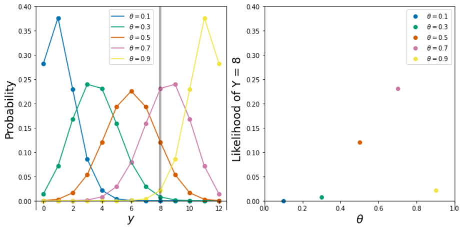
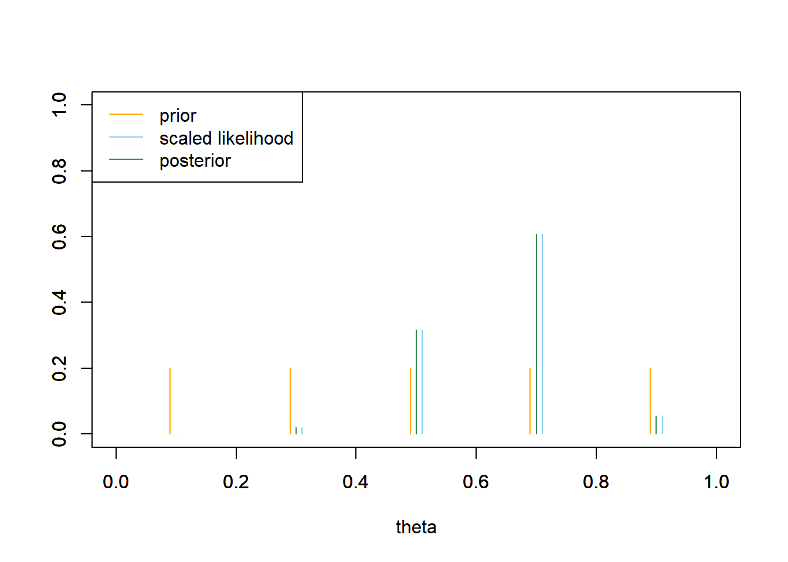
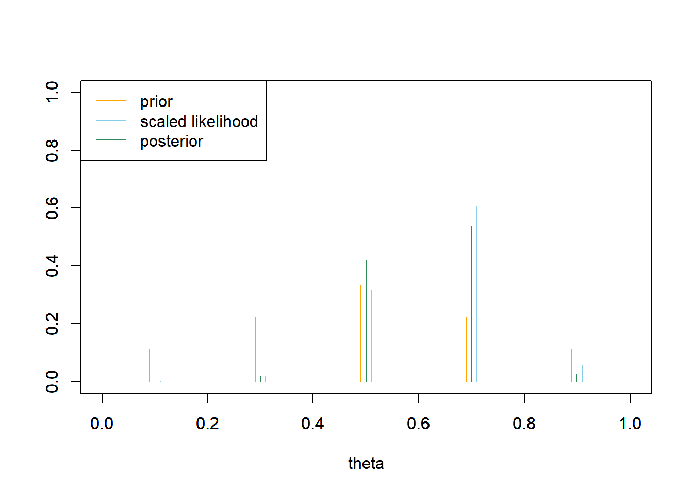
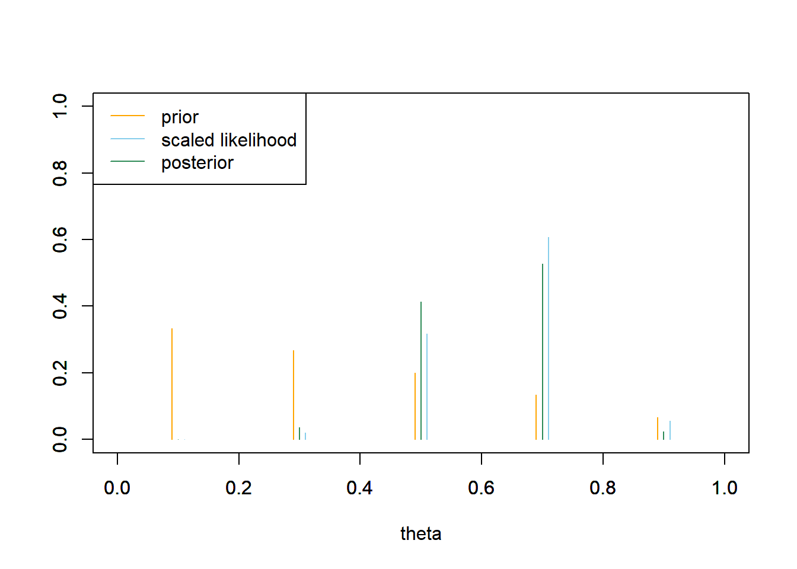
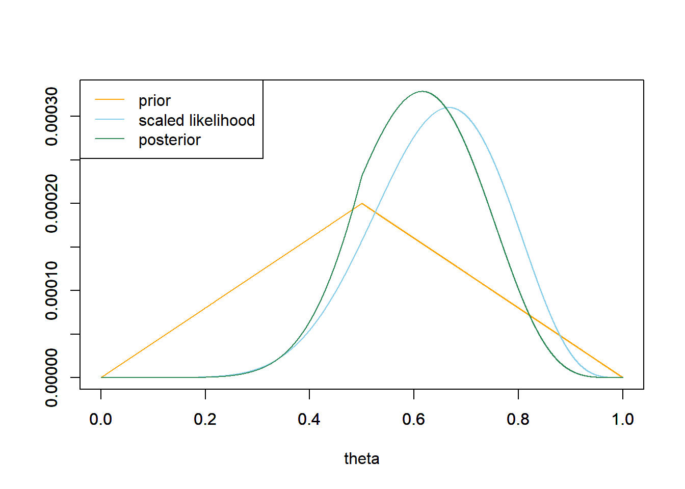
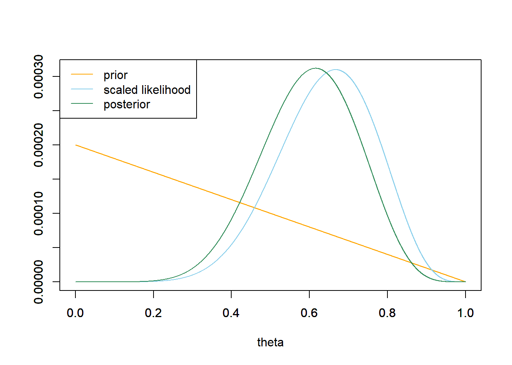
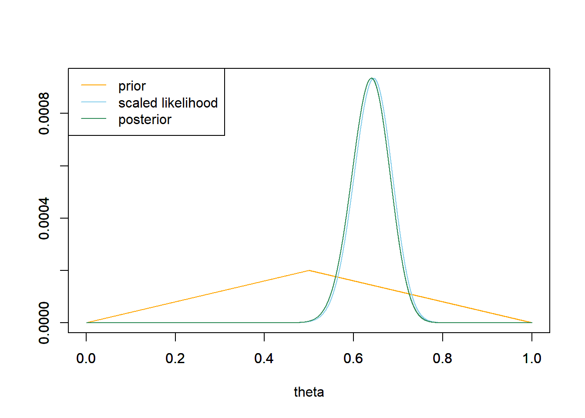
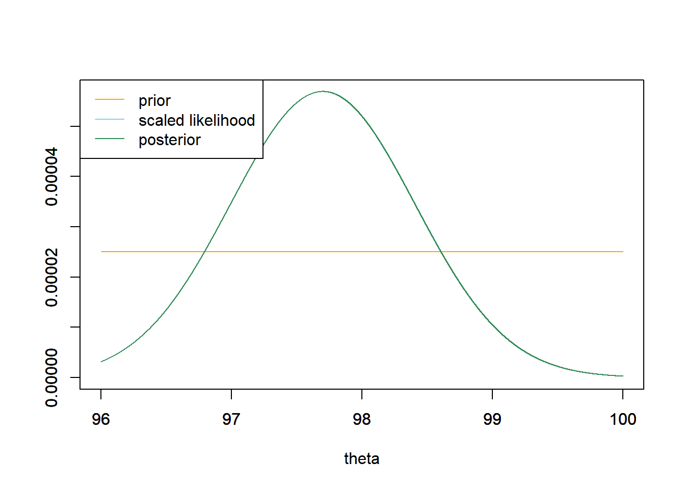

Chapter 4 Introduction to Estimation
Example 4.1 Most people are right-handed, and even the right eye is dominant for most people. In a 2003 study reported in Nature, a German bio-psychologist conjectured that this preference for the right side manifests itself in other ways as well. In particular, he investigated if people have a tendency to lean their heads to the right when kissing. The researcher observed kissing couples in public places and recorded whether the couple leaned their heads to the right or left. (We’ll assume this represents a randomly representative selected sample of kissing couples.)
The parameter of interest in this study is the population proportion of kissing couples who lean their heads to the right. Denote this unknown parameter \(\theta\).
Let \(Y\) be the number of couples in a random sample of \(n\) kissing couples that lean to right. Then \(Y\) has a Binomial(\(n\), \(\theta\)) distribution. Suppose that in a sample of \(n=12\) couples \(y=8\) leaned to the right.
- If you were to estimate \(\theta\) with a single number based on this sample data alone, intuitively what number would you pick?
- For the next few parts suppose \(n=12\). For now we’ll only consider these potential values for \(\theta\): \(0.1, 0.3, 0.5, 0.7, 0.9\). If \(\theta=0.1\) what is the distribution of \(Y\)? Compute and interpret the probability that \(Y=8\) if \(\theta = 0.1\)
- If \(\theta=0.3\) what is the distribution of \(Y\)? Compute and interpret the probability that \(Y=8\) if \(\theta = 0.3\)
- If \(\theta=0.5\) what is the distribution of \(Y\)? Compute and interpret the probability that \(Y=8\) if \(\theta = 0.5\).
- If \(\theta=0.7\) what is the distribution of \(Y\)? Compute and interpret the probability that \(Y=8\) if \(\theta = 0.7\).
- If \(\theta=0.9\) what is the distribution of \(Y\)? Compute and interpret the probability that \(Y=8\) if \(\theta = 0.9\).
- Now remember that \(\theta\) is unknown. If you had to choose your estimate of \(\theta\) from the values \(0.1, 0.3, 0.5, 0.7, 0.9\), which one of these values would you choose based on of observing \(y=8\) couples leaning to the right in a sample of 12 kissing couples? Why?
- Obviously our choice is not restricted to those five values of \(\theta\). Describe in principle the process you would follow to find the estimate of \(\theta\) based on of observing \(y=8\) couples leaning to the right in a sample of 12 kissing couples.
- Let \(f(y|\theta)\) denote the probability of observing \(y\) couples leaning to the right in a sample of 12 kissing couples. Determine \(f(y=8|\theta)\) and sketch a graph of it. What is this a function of? What is an appropriate name for this function?
- What is our estimate of \(\theta\) based solely on the data of observing \(y=8\) couples leaning to the right in a sample of 12 kissing couples?
Show/hide solution
- Seems reasonable to use the sample proportion 8/12 = 0.667.
- If \(\theta=0.1\) then \(Y\) has a Binomial(12, 0.1) distribution and \(P(Y = 8|\theta = 0.1) = \binom{12}{8}0.1^8(1-0.1)^{12-8}\approx 0.000\);
dbinom(8, 12, 0.1). - If \(\theta=0.3\) then \(Y\) has a Binomial(12, 0.3) distribution and \(P(Y = 8|\theta = 0.3) = \binom{12}{8}0.3^8(1-0.3)^{12-8}\approx 0.008\);
dbinom(8, 12, 0.3). - If \(\theta=0.5\) then \(Y\) has a Binomial(12, 0.5) distribution and \(P(Y = 8|\theta = 0.5) = \binom{12}{8}0.5^8(1-0.5)^{12-8}\approx 0.121\);
dbinom(8, 12, 0.5). - If \(\theta=0.7\) then \(Y\) has a Binomial(12, 0.7) distribution and \(P(Y = 8|\theta = 0.7) = \binom{12}{8}0.7^8(1-0.7)^{12-8}\approx 0.231\);
dbinom(8, 12, 0.7). - If \(\theta=0.9\) then \(Y\) has a Binomial(12, 0.9) distribution and \(P(Y = 8|\theta = 0.9) = \binom{12}{8}0.9^8(1-0.9)^{12-8}\approx 0.021\);
dbinom(8, 12, 0.9). - Comparing the above, the probability of observing \(y=8\) is greatest when \(\theta=0.7\), so in some sense, the data seems most “consistent” with \(\theta=0.7\).
- For each value of \(\theta\) between 0 and 1 compute the probability of observing \(y=8\), \(P(Y = 8|theta)\), and find which value of \(\theta\) maximizes this probability.
- \(f(y|\theta)=P(Y=8|theta) = \binom{12}{8}\theta^8(1\theta)^{12-8}\). This is a function of \(\theta\), with the data \(y=8\) fixed. Since this function computes the likelihood of observing the data (evidence) under different values of \(\theta\), “likelihood function” seems like an appropriate name. See the plot below.
- The value which maximizes the likelihood of \(y=8\) is \(8/12\). So the maximum likelihood estimate of \(\theta\) is \(8/12\).

- For given data \(y\), the likelihood function \(f(y|\theta)\) is the probability (or density for continuous data) of observing the sample data \(y\) viewed as a function of the parameter \(\theta\).
- In the likelihood function, the observed value of the data \(y\) is treated as a fixed constant.
- The value of a parameter that maximizes the likelihood function is called a maximum likelihood estimate (MLE).
- The MLE depends on the data \(y\). For given data \(y\), the MLE is the value of \(\theta\) which gives the largest probability of having produced the observed data \(y\).
- Maximum likelihood estimation is a common frequentist technique for estimating the value of a parameter based on data from a sample.
Example 4.2 We’ll now take a Bayesian approach to estimating \(\theta\) in Example 4.1. We treat the unknown parameter \(\theta\) as a random variable and wish to find its posterior distribution after observing \(y=8\) couples leaning to the right in a sample of 12 kissing couples.
We will start with a very simplified, unrealistic prior distribution that assumes only five possible, equally likely values for \(\theta\): 0.1, 0.3, 0.5, 0.7, 0.9.
- Sketch a plot of the prior distribution and fill in the prior column of the Bayes table.
- Now suppose that \(y=8\) couples in a sample of size \(n=12\) lean right. Sketch a plot of the likelihood function and fill in the likelihood column in the Bayes table.
- Complete the Bayes table and sketch a plot of the posterior distribution. What does the posterior distribution say about \(\theta\)? How does it compare to the prior and the likelihood?
- Now consider a prior distribution which places probability 1/9, 2/9, 3/9, 2/9, 1/9 on the values 0.1, 0.3, 0.5, 0.7, 0.9, respectively. What does this prior distribution say about \(\theta\)? Redo the previous parts. How does the posterior distribution change?
- Now consider a prior distribution which places probability 5/15, 4/15, 3/15, 2/15, 1/15 on the values 0.1, 0.3, 0.5, 0.7, 0.9, respectively. What does this prior distribution say about \(\theta\)? Redo the previous parts. How does the posterior distribution change?
See plot below; the prior is “flat”.
The likelihood is computed as in Example 4.1.
See the Bayes table below. Since the prior is flat, the posterior is proportional to the likelihood.
# prior theta = seq(0.1, 0.9, 0.2) prior = rep(1, length(theta)) prior = prior / sum(prior) # data n = 12 # sample size y = 8 # sample count of success # likelihood, using binomial likelihood = dbinom(y, n, theta) # function of theta # posterior product = likelihood * prior posterior = product / sum(product) # bayes table bayes_table = data.frame(theta, prior, likelihood, product, posterior) kable(bayes_table, digits = 4, align = 'r')theta prior likelihood product posterior 0.1 0.2 0.0000 0.0000 0.0000 0.3 0.2 0.0078 0.0016 0.0205 0.5 0.2 0.1208 0.0242 0.3171 0.7 0.2 0.2311 0.0462 0.6065 0.9 0.2 0.0213 0.0043 0.0559 # plots plot(theta-0.01, prior, type='h', xlim=c(0, 1), ylim=c(0, 1), col="orange", xlab='theta', ylab='') par(new=T) plot(theta+0.01, likelihood/sum(likelihood), type='h', xlim=c(0, 1), ylim=c(0, 1), col="skyblue", xlab='', ylab='') par(new=T) plot(theta, posterior, type='h', xlim=c(0, 1), ylim=c(0, 1), col="seagreen", xlab='', ylab='') legend("topleft", c("prior", "scaled likelihood", "posterior"), lty=1, col=c("orange", "skyblue", "seagreen"))
See table and plot below. Because the posterior probability is greater for 0.5 than for 0.7, the posterior probability of \(\theta=0.5\) is greater than in the previous part, and the posterior probability of \(\theta=0.7\) is less.
theta prior likelihood product posterior 0.1 0.1111 0.0000 0.0000 0.0000 0.3 0.2222 0.0078 0.0017 0.0181 0.5 0.3333 0.1208 0.0403 0.4207 0.7 0.2222 0.2311 0.0514 0.5365 0.9 0.1111 0.0213 0.0024 0.0247 
See the table and plot below. The prior probability is large for 0.1 and 0.3, but since the likelihood corresponding to these values is so small, the posterior probabilities are small. This posterior distribution is similar to the one from the previous part.
theta prior likelihood product posterior 0.1 0.3333 0.0000 0.0000 0.0000 0.3 0.2667 0.0078 0.0021 0.0356 0.5 0.2000 0.1208 0.0242 0.4132 0.7 0.1333 0.2311 0.0308 0.5269 0.9 0.0667 0.0213 0.0014 0.0243 
Bayesian estimation
- Regards parameters as random variables with probability distributions
- Assigns a subjective prior distribution to parameters
- Conditions on the observed data
- Applies Bayes’ rule to produce a posterior distribution for parameters \[ \text{posterior} \propto \text{likelihood} \times \text{prior} \]
- Determines parameter estimates from the posterior distribution
In a Bayesian analysis, the posterior distribution contains all relevant information about parameters. That is, all Bayesian inference is based on the posterior distribution. The posterior distribution is a compromise between
- prior “beliefs”, as represented by the prior distribution
- data, as represented by the likelihood function
In contrast, a frequentist approach regards parameters as unknown but fixed (not random) quantities. Frequentist estimates are commonly determined by the likelihood function.
It is helpful to plot prior, likelihood, and posterior on the same plot. Since prior and likelihood are probability distributions, they are on the same scale. However, remember that the likelihood does not add up to anything in particular. To put the likelihood on the same scale as prior and posterior, it is helpful to rescale the likelihood so that it adds up to 1. Such a rescaling does not change the shape of the likelihood, it merely allows for easier comparison with prior and posterior.
Example 4.3 Continuing Example 4.2. While the previous exercise introduced the main ideas, it was unrealistic to consider only five possible values of \(\theta\).
- What are the possible values of \(\theta\)? Does the parameter \(\theta\) take values on a continuous or discrete scale? (Careful: we’re talking about the parameter and not the data.)
- Let’s assume that any multiple of 0.0001 is a possible value of \(\theta\): \(0, 0.0001, 0.0002, \ldots, 0.9999, 1\). Assume a discrete uniform prior distribution on these values. Suppose again that \(y=8\) couples in a sample of \(n=12\) kissing couples lean right. Use software to plot the prior distribution, the (scaled) likelihood function, and then find the posterior and plot it. Describe the posterior distribution. What does it say about \(\theta\)?
- Now assume a prior distribution which is proportional to \(1-2|\theta-0.5|\) for \(\theta = 0, 0.0001, 0.0002, \ldots, 0.9999, 1\). Use software to plot this prior; what does it say about \(\theta\)? Then suppose again that \(y=8\) couples in a sample of \(n=12\) kissing couples lean right. Use software to plot the prior distribution, the (scaled) likelihood function, and then find the posterior and plot it. What does the posterior distribution say about \(\theta\)?
- Now assume a prior distribution which is proportional to \(1-\theta\) for \(\theta = 0, 0.0001, 0.0002, \ldots, 0.9999, 1\). Use software to plot this prior; what does it say about \(\theta\)? Then suppose again that \(y=8\) couples in a sample of \(n=12\) kissing couples lean right. Use software to plot the prior distribution, the (scaled) likelihood function, and then find the posterior and plot it. What does the posterior distribution say about \(\theta\)?
- Compare the posterior distributions corresponding to the three different priors. How does each posterior distribution compare to the prior and the likelihood? Does the prior distribution influence the posterior distribution?
The parameter \(\theta\) is a proportion, so it can possibly take any value in the continuous scale from 0 to 1.
See plot below. Since the prior is flat, the posterior is proportional to the likelihood. So the posterior distribution places highest posterior probability on values near the sample proportion 8/12.
# prior theta = seq(0, 1, 0.0001) prior = rep(1, length(theta)) prior = prior / sum(prior) # data n = 12 # sample size y = 8 # sample count of success # likelihood, using binomial likelihood = dbinom(y, n, theta) # function of theta # plots plot_posterior <- function(theta, prior, likelihood){ # posterior product = likelihood * prior posterior = product / sum(product) ylim = c(0, max(c(prior, posterior, likelihood / sum(likelihood)))) plot(theta, prior, type='l', xlim=c(0, 1), ylim=ylim, col="orange", xlab='theta', ylab='') par(new=T) plot(theta, likelihood/sum(likelihood), type='l', xlim=c(0, 1), ylim=ylim, col="skyblue", xlab='', ylab='') par(new=T) plot(theta, posterior, type='l', xlim=c(0, 1), ylim=ylim, col="seagreen", xlab='', ylab='') legend("topleft", c("prior", "scaled likelihood", "posterior"), lty=1, col=c("orange", "skyblue", "seagreen")) } plot_posterior(theta, prior, likelihood)
See plot below. The posterior is a compromise between the “triangular” prior which places highest prior probability near 0.5, and the likelihood. For this posterior, the posterior probability is greater near 0.5 than for the one in the previous part.
# prior theta = seq(0, 1, 0.0001) prior = 1 - 2 * abs(theta - 0.5) prior = prior / sum(prior) # data n = 12 # sample size y = 8 # sample count of success # likelihood, using binomial likelihood = dbinom(y, n, theta) # function of theta # plots plot_posterior(theta, prior, likelihood)
Again the posterior is a compromise between prior and likelihood. The prior probabilities are greatest for values of \(\theta\) near 0; however, the likelihood corresponding to these values is small, so the posterior probabilities are close to 0. As in the previous part, some of the posterior probability is shifted towards part 0.5, as opposed to what happens with the uniform prior.
# prior theta = seq(0, 1, 0.0001) prior = 1 - theta prior = prior / sum(prior) # data n = 12 # sample size y = 8 # sample count of success # likelihood, using binomial likelihood = dbinom(y, n, theta) # function of theta # plots plot_posterior(theta, prior, likelihood)
For the “flat” prior, the posterior is proportional to the likelihood. For the other priors, the posterior is a compromise between prior and likelihood. The prior does have some influence. We do see three somewhat different posterior distributions corresponding to these three prior distributions.
- Even in situations where the data are discrete (e.g., binary success/failure data, count data), most statistical parameters take values on a continuous scale.
- Thus in a Bayesian analysis, parameters are usually continuous random variables, and have continuous probability distributions, a.k.a., densities.
- An alternative to dealing with continuous distributions is to use grid approximation: Treat the parameter as discrete, on a sufficiently fine grid of values, and use discrete distributions.
Example 4.4 Continuing Example 4.1. Now we’ll perform a Bayesian analysis on the actual study data in which 80 couples out of a sample of 124 leaned right. We’ll again use a grid approximation and assume that any multiple of 0.0001 between 0 and 1 is a possible value of \(\theta\): \(0, 0.0001, 0.0002, \ldots, 0.9999, 1\).
- Before performing the Bayesian analysis, use software to plot the likelihood when \(y=80\) couples in a sample of \(n=124\) kissing couples lean right, and compute the maximum likelihood estimate of \(\theta\) based on this data.
- Now back to Bayesian analysis. Assume a discrete uniform prior distribution for \(\theta\). Suppose that \(y=80\) couples in a sample of \(n=124\) kissing couples lean right. Use software to plot the prior distribution, the likelihood function, and then find the posterior and plot it. Describe the posterior distribution. What does it say about \(\theta\)?
- Now assume a prior distribution which is proportional to \(1-2|\theta-0.5|\) for \(\theta = 0, 0.0001, 0.0002, \ldots, 0.9999, 1\). Then suppose again that \(y=80\) couples in a sample of \(n=124\) kissing couples lean right. Use software to plot the prior distribution, the likelihood function, and then find the posterior and plot it. What does the posterior distribution say about \(\theta\)?
- Now assume a prior distribution which is proportional to \(1-\theta\) for \(\theta = 0, 0.0001, 0.0002, \ldots, 0.9999, 1\). Then suppose again that \(y=80\) couples in a sample of \(n=124\) kissing couples lean right. Use software to plot the prior distribution, the likelihood function, and then find the posterior and plot it. What does the posterior distribution say about \(\theta\)?
- Compare the posterior distributions corresponding to the three different priors. How does each posterior distribution compare to the prior and the likelihood? Comment on the influence that the prior distribution has. Does the Bayesian inference for these data appear to be highly sensitive to the choice of prior? How does this compare to the \(n=12\) situation?
See plot below. The likelihood function is \(f(y=80|\theta) = \binom{124}{80}\theta^{80}(1-\theta)^{124-80}, 0 \le\theta\le1\), the likelihood of observing a value of \(y=80\) from a Binomial(124, \(\theta\)) distribution (
dbinom(80, 124, theta)). The maximum likelihood estimate of \(\theta\) is the sample proportion \(80/124=0.645\).See plot below. Since the prior is flat, the posterior is proportional to the likelihood. The posterior places almost all of its probability on \(\theta\) values between about 0.55 and 0.75, with the highest probability near the observed sample proportion of 0.645.
# prior theta = seq(0, 1, 0.0001) prior = rep(1, length(theta)) prior = prior / sum(prior) # data n = 124 # sample size y = 80 # sample count of success # likelihood, using binomial likelihood = dbinom(y, n, theta) # function of theta # plots plot_posterior(theta, prior, likelihood)
See the plot below. The posterior is very similar to the one from the previous part.

See the plot below. The posterior is very similar to the one from the previous part.

Even though the priors are different, they are all similar to each other and all similar to the shape of the likelihood. Comparing these priors it does not appear that the posterior is highly sensitive to choice of prior. The data carry more weight when \(n=124\) than it did when \(n=12\). In other words, the prior has less influence when the sample size is larger. When the sample size is larger, the likelihood is more “peaked” and so the likelihood, and hence posterior, is small outside a narrower range of values than when the sample size is small.
Recall that the likelihood function is the probability (or density for continuous data) of observing the sample data \(y\) viewed as a function of the parameter \(\theta\). When the data \(y\) takes values on a continuous scale, the likelihood is determined by the probability density function of \(Y\) given \(\theta\), \(f(y|\theta)\). In the likelihood function, the observed value of the data \(y\) is treated as a fixed constant, and the likelihood of observing that \(y\) is evaluated for all potential values of \(\theta\).
Recall that a continuous random variable11 \(U\) follows a Normal (a.k.a., Gaussian) distribution with mean \(\mu\) and standard deviation \(\sigma>0\) if its probability density function is12 \[\begin{align*} f_U(u) & = \frac{1}{\sigma\sqrt{2\pi}}\,\exp\left(-\frac{1}{2}\left(\frac{u-\mu}{\sigma}\right)^2\right), \quad -\infty<u<\infty.\\ & \propto \frac{1}{\sigma}\,\exp\left(-\frac{1}{2}\left(\frac{u-\mu}{\sigma}\right)^2\right), \quad -\infty<u<\infty. \end{align*}\] The constant \(1/\sqrt{2\pi}\) ensures that the total area under the density is 1, but it doesn’t effect the shape of the density.
In R, dnorm(u, mu, sigma).
Example 4.5 Assume body temperatures (degrees Fahrenheit) of healthy adults follow a Normal distribution with unknown mean \(\mu\) and known13 standard deviation \(\sigma=1\). Suppose we wish to estimate \(\mu\), the population mean healthy human body temperature.
- Assume first the following discrete prior distribution for \(\mu\) which places probability 0.10, 0.25, 0.30, 0.25, 0.10 on the values 97.6, 98.1, 98.6, 99.1, 99.6, respectively. Suppose a single temperature value of 97.9 is observed. Construct a Bayes table and find the posterior distribution of \(\mu\). In particular, how do you determine the likelihood?
- Now suppose a second temperature value, 97.5, is observed, independently of the first. Construct a Bayes table and find the posterior distribution of \(\mu\) after observing these two measurements, using the posterior distribution from the previous part as the prior distribution in this part.
- Now consider the original prior again. Determine the likelihood of observing temperatures of 97.9 and 97.5 in a sample of size 2. Then construct a Bayes table and find the posterior distribution of \(\mu\) after observing these two measurements. Compare to the previous part.
- Consider the original prior again. Suppose that we take a random sample of two temperature measurements, but instead of observing the two individual values, we only observe that the sample mean is 97.7. Determine the likelihood of observing a sample mean of 97.7 in a sample of size 2. (Hint: if \(\bar{Y}\) is the sample mean of \(n\) values from a \(N(\mu, \sigma)\) distribution, what is the distribution of \(\bar{Y}\)?) Then construct a Bayes table and find the posterior distribution of \(\mu\) after observing this sample mean. Compare to the previous part.
The likelihood is determined by evaluating the Normal(\(\mu\), 1) density at \(y=97.9\) for different values of \(\mu\):
dnorm(97.9, mu, 1)or \[ f(97.9|\mu) = \frac{1}{\sqrt{2\pi}}\,\exp\left(-\frac{1}{2}\left(\frac{97.9-\mu}{1}\right)^2\right) \] See the table below. Posterior probability is shifted towards the smaller values of \(\mu\) since those give the higher likelihood of the observed value \(y=97.9\).# prior theta = seq(97.6, 99.6, 0.5) prior = c(0.10, 0.25, 0.30, 0.25, 0.10) prior = prior / sum(prior) # data y = 97.9 # single observed value sigma = 1 # likelihood likelihood = dnorm(y, theta, sigma) # function of theta # posterior product = likelihood * prior posterior = product / sum(product) # bayes table bayes_table = data.frame(theta, prior, likelihood, product, posterior) kable(bayes_table, digits = 4, align = 'r')theta prior likelihood product posterior 97.6 0.10 0.3814 0.0381 0.1326 98.1 0.25 0.3910 0.0978 0.3400 98.6 0.30 0.3123 0.0937 0.3258 99.1 0.25 0.1942 0.0485 0.1688 99.6 0.10 0.0940 0.0094 0.0327 See the table below. More posterior probability is shifted towards the smaller values of \(\mu\).
# prior prior = posterior # data y = 97.5 # single observed value sigma = 1 # likelihood likelihood = dnorm(y, theta, sigma) # function of theta # posterior product = likelihood * prior posterior = product / sum(product) # bayes table bayes_table = data.frame(theta, prior, likelihood, product, posterior) kable(bayes_table, digits = 4, align = 'r')theta prior likelihood product posterior 97.6 0.1326 0.3970 0.0527 0.2048 98.1 0.3400 0.3332 0.1133 0.4407 98.6 0.3258 0.2179 0.0710 0.2761 99.1 0.1688 0.1109 0.0187 0.0728 99.6 0.0327 0.0440 0.0014 0.0056 See the table below. Since the two measurements are independent, the likelihood is the product of the likelihoods for \(y=97.9\) and \(y=97.5\). The posterior is the same in the previous part. It doesn’t matter if we update the posterior after each observations, or all at once.
# prior theta = seq(97.6, 99.6, 0.5) prior = c(0.10, 0.25, 0.30, 0.25, 0.10) prior = prior / sum(prior) # data y = c(97.9, 97.5) # two observed values sigma = 1 # likelihood likelihood = dnorm(y[1], theta, sigma) * dnorm(y[2], theta, sigma) # function of theta # posterior product = likelihood * prior posterior = product / sum(product) # bayes table bayes_table = data.frame(theta, prior, likelihood, product, posterior) kable(bayes_table, digits = 4, align = 'r')theta prior likelihood product posterior 97.6 0.10 0.1514 0.0151 0.2048 98.1 0.25 0.1303 0.0326 0.4407 98.6 0.30 0.0680 0.0204 0.2761 99.1 0.25 0.0215 0.0054 0.0728 99.6 0.10 0.0041 0.0004 0.0056 For a sample of size \(n\) from a \(N(\mu,\sigma)\) distribution, the sample mean follows a \(N\left(\mu, \frac{\sigma}{\sqrt{n}}\right)\) distribution. The likelihood is determined by evaluating the Normal(\(\mu\), \(\frac{1}{\sqrt{2}}\)) density at \(y=97.7\) for different values of \(\mu\):
dnorm(97.7, mu, 1 / sqrt(2))or \[ f_{\bar{Y}}(97.7|\mu) \propto \exp\left(-\frac{1}{2}\left(\frac{97.7-\mu}{1/\sqrt{2}}\right)^2\right) \] See the table below. While the likelihood is not the same as in the previous part, it is proportionally the same; that is, the likelihood in this part has the same shape as the likelihood in the previous part. Therefore, the posterior distributions are the same.# prior theta = seq(97.6, 99.6, 0.5) prior = c(0.10, 0.25, 0.30, 0.25, 0.10) prior = prior / sum(prior) # data n = 2 y = 97.7 # sample mean sigma = 1 # likelihood likelihood = dnorm(y, theta, sigma / sqrt(n)) # function of theta # posterior product = likelihood * prior posterior = product / sum(product) # bayes table bayes_table = data.frame(theta, prior, likelihood, product, posterior) kable(bayes_table, digits = 4, align = 'r')theta prior likelihood product posterior 97.6 0.10 0.5586 0.0559 0.2048 98.1 0.25 0.4808 0.1202 0.4407 98.6 0.30 0.2510 0.0753 0.2761 99.1 0.25 0.0795 0.0199 0.0728 99.6 0.10 0.0153 0.0015 0.0056
It is often not necessary to know all the individual data values to evaluate the shape of the likelihood as a function of the parameter \(\theta\), but rather simply the values of a few summary statistics.
For example, when estimating the population mean of a Normal distribution with known standard deviation \(\sigma\), it is sufficient to know the sample mean for the purposes of evaluating the shape of the likelihood of the observed data under different potential values of the population mean.
If \(Y_1, \ldots, Y_n\) is a random sample from a \(N(\mu, \sigma)\) distribution, then \(\bar{Y}\) has a \(N\left(\mu, \frac{\sigma}{\sqrt{n}}\right)\) distribution
- \(\sigma\) measures the unit-to-unit variability of individual values of the variable over all possible units in the population. For example, how much do body temperatures vary from person-to-person over many people?
- \(\frac{\sigma}{\sqrt{n}}\) measures the sample-to-sample variability of sample means over all possible samples of size \(n\) from the population. For example, how much do sample mean body temperatures from sample to sample over many samples of \(n\) people?
Example 4.6 Continuing the previous example. We’ll now use a grid approximation and assume that any multiple of 0.0001 between 96.0 and 100.0 is a possible value of \(\mu\): \(96.0, 96.0001, 96.0002, \ldots, 99.9999, 100.0\).
- Assume a discrete uniform prior distribution over \(\mu\) values in the grid. Suppose that the sample mean temperature is \(\bar{y}=97.7\) in a sample of \(n=2\) temperature measurements. Use software to plot the prior distribution, the (scaled) likelihood function, and then find the posterior and plot it. Describe the posterior distribution. What does it say about \(\mu\)?
- Now assume a prior distribution which is proportional to a Normal distribution with mean 98.6 and standard deviation 0.7 over \(\mu\) values in the grid. Suppose that the sample mean temperature is \(\bar{y}=97.7\) in a sample of \(n=2\) temperature measurements. Use software to plot the prior distribution, the (scaled) likelihood function, and then find the posterior and plot it. Describe the posterior distribution. What does it say about \(\mu\)?
- Compare the posterior distributions corresponding to the two different priors. How does each posterior distribution compare to the prior and the likelihood? Comment on the influence that the prior distribution has.
Since the prior is flat, the posterior has the same shape as the likelihood. The highest posterior probability is near the observed sample mean of 97.7.
# prior theta = seq(96, 100, 0.0001) prior = rep(1, length(theta)) prior = prior / sum(prior) # data n = 2 # sample size y = 97.7 # sample mean sigma = 1 # likelihood likelihood = dnorm(y, theta, sigma / sqrt(n)) # function of theta # plots plot_posterior <- function(theta, prior, likelihood){ # posterior product = likelihood * prior posterior = product / sum(product) ylim = c(0, max(c(prior, posterior, likelihood / sum(likelihood)))) plot(theta, prior, type='l', xlim=range(theta), ylim=ylim, col="orange", xlab='theta', ylab='') par(new=T) plot(theta, likelihood/sum(likelihood), type='l', xlim=range(theta), ylim=ylim, col="skyblue", xlab='', ylab='') par(new=T) plot(theta, posterior, type='l', xlim=range(theta), ylim=ylim, col="seagreen", xlab='', ylab='') legend("topleft", c("prior", "scaled likelihood", "posterior"), lty=1, col=c("orange", "skyblue", "seagreen")) } plot_posterior(theta, prior, likelihood)
Be sure to distinguish between the Normal distribution in the prior, which quantifies our prior uncertainty about \(\mu\), and the Normal distribution used to determine the likelihood which models variability of temperatures in the population. The poster is a compromise between likelihood and prior.
# prior theta = seq(96, 100, 0.0001) prior = dnorm(theta, 98.6, 0.7) prior = prior / sum(prior) # data n = 2 # sample size y = 97.7 # sample mean sigma = 1 # likelihood likelihood = dnorm(y, theta, sigma / sqrt(n)) # function of theta plot_posterior(theta, prior, likelihood)
When the prior is flat, the posterior has the shape of the likelihood. Otherwise, the posterior is a compromise between prior and likelihood. When the sample size is so small, the prior will have a lot of influence on the posterior.
Example 4.7 Continuing the previous example. In a recent study14, the sample mean body temperature in a sample of 208 healthy adults was 97.7 degrees F.
We’ll again use a grid approximation and assume that any multiple of 0.0001 between 96.0 and 100.0 is a possible value of \(\mu\): \(96.0, 96.0001, 96.0002, \ldots, 99.9999, 100.0\).
- Before performing a Bayesian analysis, use software to plot the likelihood, and compute the maximum likelihood estimate of \(\mu\) based on this data.
- Assume a discrete uniform prior distribution over \(\mu\) values in the grid. Use software to plot the prior distribution, the (scaled) likelihood function, and then find the posterior and plot it. Describe the posterior distribution. What does it say about \(\mu\)?
- Now assume a prior distribution which is proportional a Normal distribution with mean 98.6 and standard deviation 0.7 over \(\mu\) values in the grid. Use software to plot the prior distribution, the (scaled) likelihood function, and then find the posterior and plot it. Describe the posterior distribution. What does it say about \(\mu\)?
- Compare the posterior distributions corresponding to the two different priors. How does each posterior distribution compare to the prior and the likelihood? Comment on the influence that the prior distribution has. How does this compare to the \(n=2\) situation?
The likelihood is determined by evaluating the Normal(\(\mu\), \(\frac{1}{\sqrt{208}}\)) density at \(y=97.7\) for different values of \(\mu\):
dnorm(97.7, mu, 1 / sqrt(208))or \[ f_{\bar{Y}}(97.7|\mu) \propto \exp\left(-\frac{1}{2}\left(\frac{97.7-\mu}{1/\sqrt{208}}\right)^2\right) \] See a plot of the likelihood below. The MLE of \(\mu\) is the observed sample mean of 97.7.Since the prior is flat, the posterior has the same shape as the likelihood. With such a large sample size, the likelihood is pretty peaked. So the posterior probability is concentrated in a fairly narrow range of values around 97.7.
# prior theta = seq(96, 100, 0.0001) prior = rep(1, length(theta)) prior = prior / sum(prior) # data n = 208 # sample size y = 97.7 # sample mean sigma = 1 # likelihood likelihood = dnorm(y, theta, sigma / sqrt(n)) # function of theta plot_posterior(theta, prior, likelihood)
Even though the prior probability is highest near 98.6, the likelihood at these values is so small that they have small posterior probability. The posterior distribution is about the same as in the previous part.
# prior theta = seq(96, 100, 0.0001) prior = dnorm(theta, 98.6, 0.7) prior = prior / sum(prior) # data n = 208 # sample size y = 97.7 # sample mean sigma = 1 # likelihood likelihood = dnorm(y, theta, sigma / sqrt(n)) # function of theta plot_posterior(theta, prior, likelihood)
The posterior distributions are about the same in each case. With a large sample size, the likelihood is fairly peaked, and so the likelihood is close to 0 outside of a narrow range of values around the observed sample mean of 97.7. Therefore, the posterior probability is concentrated in this range, regardless of the prior.
Why \(U\) and not \(X\) or \(Y\)? In a Bayesian analysis, we might assume the data follows a Normal distribution, but we might also use a Normal distribution to quantify the uncertainty about a parameter. We generally associate \(X\) and \(Y\) with data. \(U\) is supposed to represent a more general variable, which could be either data or a parameter.↩︎
\(\exp\) is just another way of writing the exponential function, \(\exp(u)=e^u\).↩︎
It’s unrealistic to assume the population standard deviation is known. We’ll consider the case of unknown standard deviation later.↩︎
Source and a related article.↩︎